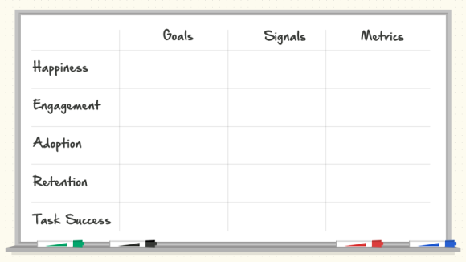

Métricas
O termo “métricas” refere-se a estatísticas gerais e medidas de desempenho. Ele pode ser entendido como um meio de mensuração de desempenho por meio de uma coleção de dados específicos ou gerais.
Deferentes tipos de métricas:
| Métricas de Marketing |
Metricas de UX |
| Taxa de conversão |
Taxa de sucesso da tarefa |
| Custo por conversão |
Sucesso percebido |
| Visitas a comprar |
Tempo de trefa |
| Taxa de rejeição |
Entrada de dados |
Sistemas de Métricas
KPIs importantes
Existem 3 métricas importantes de serem medidas em qualquer produto:
- Usabilidade : devem focar no quão fácil é realizar uma tarefa, devem permitir identificar a taxa de sucesso e facilidade de uso.
- Engajamento: é útil para entender o quanto as pessoas interagem com o produto.
- Conversão: ajudam a identificar tendências e, principalmente, a projetar novas soluções para que o produto seja mais assertivo as necessidades dos seus usuários.
Framework H.E.A.R.T.
Uma tabela para guiar o UX, que difere das métricas para negócios, que levam em conta dados como o número de produtos vendidos ou os leads gerados.

- Happiness: mede as atitudes do usuário e seu nível de satisfação.
- Engagement: mede o nível de envolvimento do usuário com seu produto.
- Adoption: mede a quantidade de novos usuários que chegam até o produto.
- Retention: mede a frequência com a qual os usuários retornam ao produto.
- Task success: mede a eficácia, eficiência e taxa de erros cometidos ao tentar realizar uma tarefa.
Dentro de cada categoria é preciso analisar 3 pontos importantes:
- Goals : cada métrica atender a um objetivo dentro do produto.
- Signals: durante o uso do produto, o usuário emitirá sinais altos e baixos que ajudarão a entender o fracasso ou o sucesso de algumas metas.
- Metrics: devem ser bem específicas e sempre lembradas em qualquer momento do projeto.